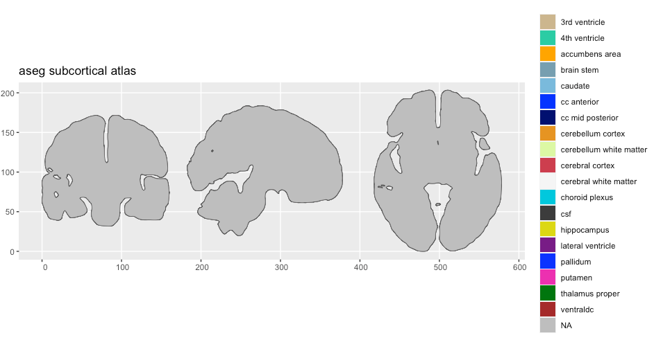
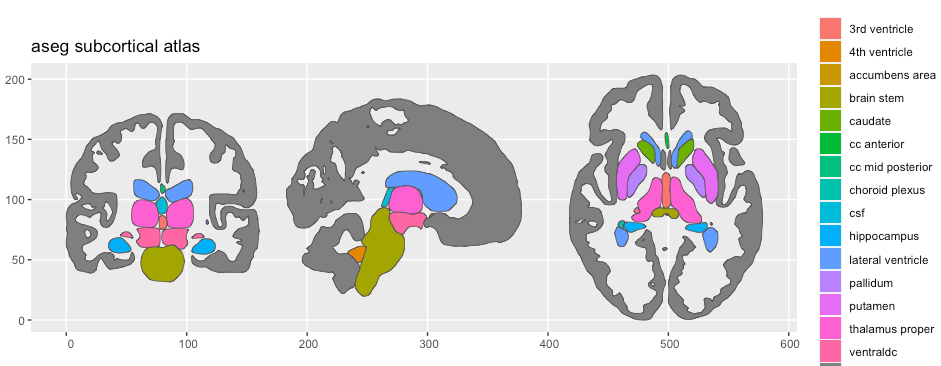

Here we provide an example of creating a cortical ggseg and ggseg3d atlas. To read more about the details of the process, see the vignette on creating custom3d atlases and creating custom polygon atlases.
Prerequisites
To successfully run these operations, you must have the following installed on your system, and be running it on either a Linux or Mac. - FSL - FreeSurfer - R - ImageMagick - orca
Initiate your R script with the following library calls:
Creating a 3d atlas
The template file
Sub-cortical segmentations are usually stored in volumetric images
with .mgz extension. These usually also include the cortex,
white matter and CSF. Some volumetric segmentations may contain both
segmentations of the cortex and the sub-cortex. If you have such a
template, we would recommend making a version where the cortex is one
large segmentation, and rather create a separate cortical atlas.
The 3d atlas
We assume the volumetric image you have is for a FreeSurfer subject, specifically registered to the “fsaverage5” subject, which is a good balance between number of vertices and details. If you need to register the volume to “fsaverage5”, there are FreeSurfer tools to help with this, but we have not set up any function for this in R. If you have suggestions or know of an easy command to do this, let us know in the issues so we can try implementing your solution here.
To turn a volumetric image to a ggseg3d-atlas, use the function
make_volumetric_2_3datlas. This will call a series of
FreeSurfer functions to create ascii and ply files for the mesh plots.
The function creates several intermediary files which are saved in the
output_dir specified.
# Make 3d ----
aseg2_3d <- make_volumetric_2_3datlas(
subject = "fsaverage5",
subjects_dir = freesurfer::fs_subj_dir(),
template = file.path(freesurfer::fs_subj_dir(), "fsaverage5/mri/aseg.mgz"),
output_dir = "~/Desktop/aseg"
)
ggseg3d(atlas = aseg2_3d)
aseg2_3dCleaning the atlas data
The atlas data usually needs some manual editing to get it into a nice shape for other users, and for nice plotting. We are avid tidyverse users, and as such the procedures we use here to clean the data use tidyverse functions.
First, we will unnest the ggseg_3d column, so we can see
what the atlas data contains.
unnest(aseg2_3d, ggseg_3d)# A tibble: 43 x 8
atlas surf hemi region colour label roi mesh
<chr> <chr> <chr> <chr> <chr> <chr> <chr> <list>
1 aseg_3d LCBC subcort Left-Cerebral-White-Matter #F5F5F5 Left-Cerebral-White-Matter 0002 <named list [2]>
2 aseg_3d LCBC subcort Left-Cerebral-Cortex #CD3E4E Left-Cerebral-Cortex 0003 <named list [2]>
3 aseg_3d LCBC subcort Left-Lateral-Ventricle #781286 Left-Lateral-Ventricle 0004 <named list [2]>
4 aseg_3d LCBC subcort Left-Inf-Lat-Vent #C43AFA Left-Inf-Lat-Vent 0005 <named list [2]>
5 aseg_3d LCBC subcort Left-Cerebellum-White-Matter #DCF8A4 Left-Cerebellum-White-Matter 0007 <named list [2]>
6 aseg_3d LCBC subcort Left-Cerebellum-Cortex #E69422 Left-Cerebellum-Cortex 0008 <named list [2]>
7 aseg_3d LCBC subcort Left-Thalamus-Proper #00760E Left-Thalamus-Proper 0010 <named list [2]>
8 aseg_3d LCBC subcort Left-Caudate #7ABADC Left-Caudate 0011 <named list [2]>
9 aseg_3d LCBC subcort Left-Putamen #EC0DB0 Left-Putamen 0012 <named list [2]>
10 aseg_3d LCBC subcort Left-Pallidum #0C30FF Left-Pallidum 0013 <named list [2]>
# … with 33 more rowsUsually, it is the region column we want to do some
cleaning of, to make the names of the regions more human readable. This
column is populated by the names to each region as specified in the
template file.
We can inspect all the unique values in this column, so we can start setting up some logic for renaming the regions.
region1 region2 region3 region4
"Left-Cerebral-White-Matter" "Left-Cerebral-Cortex" "Left-Lateral-Ventricle" "Left-Inf-Lat-Vent"
region5 region6 region7 region8
"Left-Cerebellum-White-Matter" "Left-Cerebellum-Cortex" "Left-Thalamus-Proper" "Left-Caudate"
region9 region10 region11 region12
"Left-Putamen" "Left-Pallidum" "3rd-Ventricle" "4th-Ventricle"
region13 region14 region15 region16
"Brain-Stem" "Left-Hippocampus" "Left-Amygdala" "CSF"
region17 region18 region19 region20
"Left-Accumbens-area" "Left-VentralDC" "Left-vessel" "Left-choroid-plexus"
region21 region22 region23 region24
"Right-Cerebral-White-Matter" "Right-Cerebral-Cortex" "Right-Lateral-Ventricle" "Right-Inf-Lat-Vent"
region25 region26 region27 region28
"Right-Cerebellum-White-Matter" "Right-Cerebellum-Cortex" "Right-Thalamus-Proper" "Right-Caudate"
region29 region30 region31 region32
"Right-Putamen" "Right-Pallidum" "Right-Hippocampus" "Right-Amygdala"
region33 region34 region35 region36
"Right-Accumbens-area" "Right-VentralDC" "Right-vessel" "Right-choroid-plexus"
region37 region38 region39 region40
"WM-hypointensities" "Optic-Chiasm" "CC_Posterior" "CC_Mid_Posterior"
region41 region42 region43
"CC_Central" "CC_Mid_Anterior" "CC_Anterior"The region names for this atlas mainly need some white space
in-between certain words to make the names readable. For instance, all
dashes (-) can be replaced with white space. We’ll try to
see other such patterns and how we can easily alter names so they look
nicer.
unnest(aseg2_3d, ggseg_3d) |>
mutate(region = gsub("-|_", " ", region),
region = tolower(region),
region = gsub("cc ", "corpus callosum ", region)
) |>
select(region) |>
unique() |>
unlist() region1 region2 region3 region4
"left cerebral white matter" "left cerebral cortex" "left lateral ventricle" "left inf lat vent"
region5 region6 region7 region8
"left cerebellum white matter" "left cerebellum cortex" "left thalamus proper" "left caudate"
region9 region10 region11 region12
"left putamen" "left pallidum" "3rd ventricle" "4th ventricle"
region13 region14 region15 region16
"brain stem" "left hippocampus" "left amygdala" "csf"
region17 region18 region19 region20
"left accumbens area" "left ventraldc" "left vessel" "left choroid plexus"
region21 region22 region23 region24
"right cerebral white matter" "right cerebral cortex" "right lateral ventricle" "right inf lat vent"
region25 region26 region27 region28
"right cerebellum white matter" "right cerebellum cortex" "right thalamus proper" "right caudate"
region29 region30 region31 region32
"right putamen" "right pallidum" "right hippocampus" "right amygdala"
region33 region34 region35 region36
"right accumbens area" "right ventraldc" "right vessel" "right choroid plexus"
region37 region38 region39 region40
"wm hypointensities" "optic chiasm" "corpus callosum posterior" "corpus callosum mid posterior"
region41 region42 region43
"corpus callosum central" "corpus callosum mid anterior" "corpus callosum anterior"Once we are satisfied with the region names, we should also alter the atlas name in the data, to something a little more pleasing.
unnest(aseg2_3d, ggseg_3d) |>
mutate(region = gsub("-|_", " ", region),
region = tolower(region),
region = gsub("cc ", "corpus callosum ", region),
atlas = "aseg2_3d"
)# A tibble: 43 x 8
atlas surf hemi region colour label roi mesh
<chr> <chr> <chr> <chr> <chr> <chr> <chr> <list>
1 aseg2_3d LCBC subcort left cerebral white matter #F5F5F5 Left-Cerebral-White-Matter 0002 <named list [2]>
2 aseg2_3d LCBC subcort left cerebral cortex #CD3E4E Left-Cerebral-Cortex 0003 <named list [2]>
3 aseg2_3d LCBC subcort left lateral ventricle #781286 Left-Lateral-Ventricle 0004 <named list [2]>
4 aseg2_3d LCBC subcort left inf lat vent #C43AFA Left-Inf-Lat-Vent 0005 <named list [2]>
5 aseg2_3d LCBC subcort left cerebellum white matter #DCF8A4 Left-Cerebellum-White-Matter 0007 <named list [2]>
6 aseg2_3d LCBC subcort left cerebellum cortex #E69422 Left-Cerebellum-Cortex 0008 <named list [2]>
7 aseg2_3d LCBC subcort left thalamus proper #00760E Left-Thalamus-Proper 0010 <named list [2]>
8 aseg2_3d LCBC subcort left caudate #7ABADC Left-Caudate 0011 <named list [2]>
9 aseg2_3d LCBC subcort left putamen #EC0DB0 Left-Putamen 0012 <named list [2]>
10 aseg2_3d LCBC subcort left pallidum #0C30FF Left-Pallidum 0013 <named list [2]>
# … with 33 more rowsOf note, at this stage, you can also add other columns of
importance to the atlas. As long as these to not conflict in terms of
names with the default atlas columns, you can add as many extra columns
as you wish. For instance, if this is an atlas based on connectivity,
there might be a nested structure to the regions, such that certain
regions together form a specific network. Adding a network
column specifying which regions belong to which network is then
appropriate.
The data include too much though! We cannot see the sub-cortical structures because the entire cortex is in the way. We should delete the any unnecessary meshes as a whole from the data, so we are only left with sub-cortical structures.
aseg2_3d <- unnest(aseg2_3d, ggseg_3d) |>
mutate(region = gsub("-|_", " ", region),
region = tolower(region),
region = gsub("cc ", "corpus callosum ", region),
atlas = "aseg2_3d"
) |>
filter(!grepl("Cortex|White-Matter", label))
ggseg3d(atlas = aseg2_3d)
Finalizing the atlas
We are now happy with the atlas data we’ve cleaned, so we can go ahead and make it into a ggseg3d-atlas class again by nesting the atlas data by surface and hemisphere
aseg2_3d <- aseg2_3d |>
nest_by(atlas, surf, hemi, .key = "ggseg_3d") |>
as_ggseg3d_atlas()
aseg2_3d# A tibble: 1 x 4
atlas surf hemi ggseg_3d
<chr> <chr> <chr> <list>
1 aseg2_3d LCBC subcort <tibble [35 × 5]>
ggseg3d(atlas = aseg2_3d) |>
add_glassbrain()
Creating the 2d atlas
Unlike the pipeline for cortical atlases which uses the newly made
ggseg3d-atlas to create polygon data, the volumetric pipeline uses the
volumetric-image just as for creating the ggseg3d-atlas above. Using a
combination of FreeSurfer’s Freeview snapshotting and ImageMagick, the
make_ggseg3d_2_ggseg() function takes snapshots of each
region and slice combination, extracts the contours of these regions,
smooths them, reduces the vertices and organizes the data into a
brain-atlas class object. The function creates a lot of intermediary
files (mostly snapshots), and will likely require you to re-run several
steps to produce the wanted end result. While the function at default
stores these files in a temporary folder, we highly recommend setting
the output_dir option, so that you do not need to rerun all
steps when testing another configuration of settings. For instance, the
step taking the longest time and most processing time is snapshotting
the regions and extracting the contours. But these two steps only need
to be run once, as long as the ggseg3d-atlas has not changed
somehow.
The creation function need a data.frame with information on which slices to snapshot using Freeview.
slices <- data.frame(x = c(130, 122, 122),
y = c(130, 235, 112),
z = c(130, 100, 106),
view = c("axial", "sagittal", "coronal"),
stringsAsFactors = FALSE)
slicesThis data.frame is provided to the slices arguments, and
will ultimately become the slices in your plot.
# make atlas ----
aseg2 <- make_volumetric_ggseg(
label_file = file.path(freesurfer::fs_subj_dir(), "fsaverage5", "mri/aseg.mgz"),
slices = slices,
vertex_size_limits = c(10, NA)
)● 1/8 Preparing labels
|==============================================| 100%, Elapsed 00:24
✓ labels ready
● 2/8 Snapshotting views of regions to ~/Desktop/aseg/snapshots,
|======================================================| 100%, Elapsed 03:20
✓ snapshots complete
● 3/8 isolating regions to ~/Desktop/aseg/interrim
|======================================================| 100%, Elapsed 00:01
✓ isolation complete
● 4/8 Writing masks to ~/Desktop/aseg/masks
|======================================================| 100%, Elapsed 00:02
✓ masks complete
● 5/8 Extracting contours from regions
|======================================================| 100%, Elapsed 00:31
✓ contours complete
● 6/8 Smoothing contours
✓ Smoothing complete
● 7/8 Reducing vertexes
✓ Vertexes reduced
● 8/8 Cleaning up data
● Atlas is complete with 244718 vertices, try re-running steps 7:8 with a higher 'tolerance' number.
✓ cleanup completeThe most likely steps to redo are steps 6-8, tweaking the
smoothness and tolerance arguments to improve
how the polygons look and how many vertices there are. The fewer
vertices, the faster the plot renders, but too few and the polygons will
look poor.
Inspecting the atlas object
First step is to have a look at the actual object. If the brain-atlas is correctly set up, the output should look like the below.
aseg2# aseg subcortical brain atlas
regions: 19
hemispheres: NA, left, right
side views: coronal, sagittal, axial
palette: yes
use: ggplot() + geom_brain()
----
side hemi roi label region
<chr> <chr> <chr> <chr> <chr>
1 coronal left 0002 Left-Cerebral-White-Matter cerebral white matter
2 coronal left 0003 Left-Cerebral-Cortex cerebral cortex
3 coronal left 0004 Left-Lateral-Ventricle lateral ventricle
4 coronal left 0010 Left-Thalamus-Proper thalamus proper
5 coronal left 0012 Left-Putamen putamen
6 coronal <NA> 0014 3rd-Ventricle 3rd ventricle
7 coronal <NA> 0016 Brain-Stem brain stem
8 coronal left 0017 Left-Hippocampus hippocampus
9 coronal <NA> 0024 CSF csf
10 coronal left 0028 Left-VentralDC ventraldc
# … with 96 more rowsSecond step is to make sure the data is being plotted correctly.
plot(aseg2)
We can clearly see something is wrong, but the legend indicated that
there is data there we cannot see. Setting the alpha might
expose something.
plot(aseg2, alpha = .5)
We can see that the polygons are there, but they are hidden behind
something. The colour of the polygons indicate that these are
NA values. Inspecting the atlas data directly is a good
idea.
aseg2$dataSimple feature collection with 112 features and 5 fields
geometry type: MULTIPOLYGON
dimension: XY
bbox: xmin: 0 ymin: 0 xmax: 578.2364 ymax: 203.3227
CRS: NA
# A tibble: 112 x 6
side hemi roi geometry label region
* <chr> <chr> <chr> <MULTIPOLYGON> <chr> <chr>
1 coron… NA 0000 (((8.596379 105.0979, 8.532187 105.0767, 8.469717 1… Unknown NA
2 coron… left 0002 (((82.41844 102.0004, 82.39649 101.9761, 82.37604 1… Left-Cerebral… cerebral wh…
3 coron… left 0003 (((88.86371 171.1159, 88.76302 171.0871, 88.66764 1… Left-Cerebral… cerebral co…
4 coron… left 0004 (((101.7151 116.3753, 101.64 116.3752, 101.5623 116… Left-Lateral-… lateral ven…
5 coron… left 0010 (((100.0108 100.9053, 99.87905 100.9186, 99.74468 1… Left-Thalamus… thalamus pr…
6 coron… left 0012 (((116.5521 82.86438, 116.5237 82.81094, 116.4955 8… Left-Putamen putamen
7 coron… NA 0014 (((78.65921 86.42692, 78.55424 86.38102, 78.45397 8… 3rd-Ventricle 3rd ventric…
8 coron… NA 0016 (((88.73587 62.17754, 88.62459 62.18198, 88.51179 6… Brain-Stem brain stem
9 coron… left 0017 (((113.3849 67.15476, 113.2684 67.12281, 113.1575 6… Left-Hippocam… hippocampus
10 coron… NA 0024 (((78.87844 101.8815, 78.78444 101.8421, 78.69133 1… CSF csf
# … with 102 more rowsWe should remove the NA data from the atlas, and also
the white-matter regions, since these don’t really fit in. Additionally,
sub-cortical atlases have the cortex as region NA so that
these are plotted, but not really treated as true parcellation
regions.
aseg2$data <- filter(aseg2$data,
!grepl("Unknown", label, ignore.case = TRUE),
!grepl("White-matter", label, ignore.case = TRUE)
) |>
mutate(region = ifelse(grepl("cortex", region), NA, region))
aseg2# aseg subcortical brain atlas
regions: 15
hemispheres: left, NA, right
side views: coronal, sagittal, axial
palette: yes
use: ggplot() + geom_brain()
----
side hemi roi label region
<chr> <chr> <chr> <chr> <chr>
1 coronal left 0004 Left-Lateral-Ventricle lateral ventricle
2 coronal left 0010 Left-Thalamus-Proper thalamus proper
3 coronal left 0012 Left-Putamen putamen
4 coronal <NA> 0014 3rd-Ventricle 3rd ventricle
5 coronal <NA> 0016 Brain-Stem brain stem
6 coronal left 0017 Left-Hippocampus hippocampus
7 coronal <NA> 0024 CSF csf
8 coronal left 0028 Left-VentralDC ventraldc
9 coronal right 0043 Right-Lateral-Ventricle lateral ventricle
10 coronal right 0049 Right-Thalamus-Proper thalamus proper
# … with 70 more rows
plot(aseg2)
In most cases, given the values in the 3d-atlas’ colour
column is correctly applied, but problems may arise given how annotation
files are set up.
Fixing the palette
Many colour tables have a unique colour for the same regions but in different hemispheres. This can often mess up the palette for the 2d-atlas, which needs the regions in the different hemispheres to have the same palette colour.
If you are working with an atlas that does not have a colour-scheme
dispatched with the atlas, the palette should be set to
NULL.
aseg2$palette <- NULL
aseg2# aseg subcortical brain atlas
regions: 15
hemispheres: left, NA, right
side views: coronal, sagittal, axial
palette: no
use: ggplot() + geom_brain()
----
side hemi roi label region
<chr> <chr> <chr> <chr> <chr>
1 coronal left 0004 Left-Lateral-Ventricle lateral ventricle
2 coronal left 0010 Left-Thalamus-Proper thalamus proper
3 coronal left 0012 Left-Putamen putamen
4 coronal <NA> 0014 3rd-Ventricle 3rd ventricle
5 coronal <NA> 0016 Brain-Stem brain stem
6 coronal left 0017 Left-Hippocampus hippocampus
7 coronal <NA> 0024 CSF csf
8 coronal left 0028 Left-VentralDC ventraldc
9 coronal right 0043 Right-Lateral-Ventricle lateral ventricle
10 coronal right 0049 Right-Thalamus-Proper thalamus proper
# … with 70 more rowsWhen there is no palette, the default atlas plot will return with default ggplot2 colours. This is absolutely a valid option. The palette is an optional part of the atlas.
plot(aseg2)
If you want to correctly apply a palette, the
aseg2$palette part of the atlas is a named character
vector, where the value of the vector is the hex-colour code, and the
names of the elements are the region names as seen in the
region column of the atlas data.
Summary
All together, the script to create both 3d and 2d atlases of the aseg parcellation looks like this:
library(ggsegExtra)
library(ggseg)
library(tidyverse)
# Make 3d ----
aseg2_3d <- make_aseg_2_3datlas(
subject = "fsaverage5",
subjects_dir = freesurfer::fs_subj_dir(),
template = file.path(freesurfer::fs_subj_dir(), "fsaverage5", "mri/aseg.mgz"),
output_dir = "~/Desktop/aseg"
)
ggseg3d(atlas = aseg2_3d)
# make atlas ----
aseg2 <- make_volumetric_ggseg(subject = "fsaverage5",
steps = 1:8,
output_dir = "~/Desktop/aseg",
vertex_size_limits = c(10, NA),
label_file = file.path(freesurfer::fs_subj_dir(), "fsaverage5", "mri/aseg.mgz"))
aseg2$data <- filter(aseg2$data,
!grepl("Unknown", label, ignore.case = TRUE),
!grepl("White-matter", label, ignore.case = TRUE)
) |>
mutate(region = ifelse(grepl("cortex", region), NA, region))
plot(aseg2, alpha = .8)